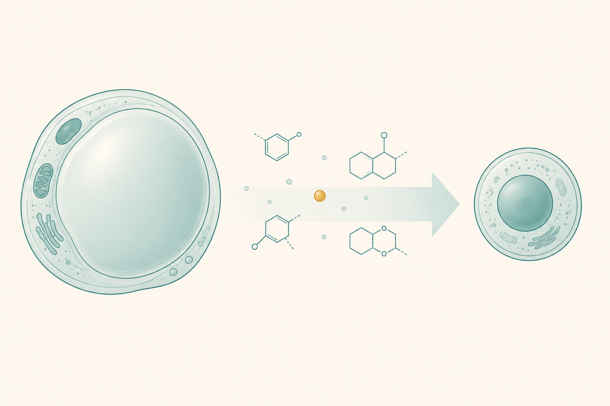
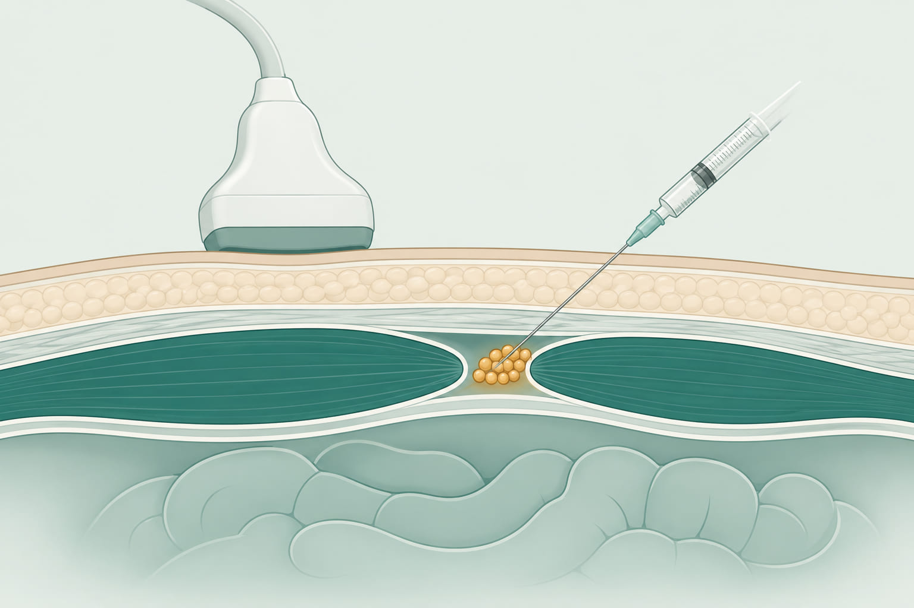
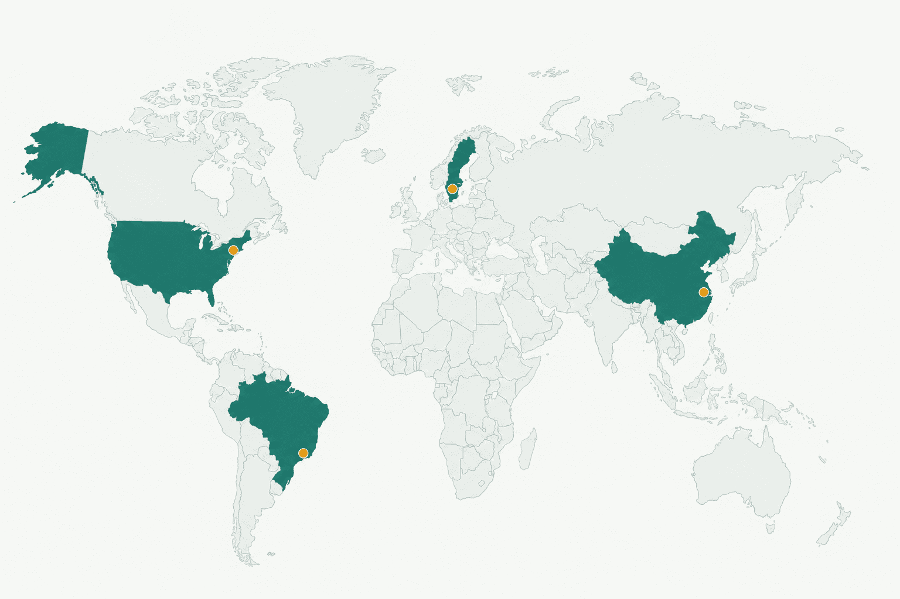
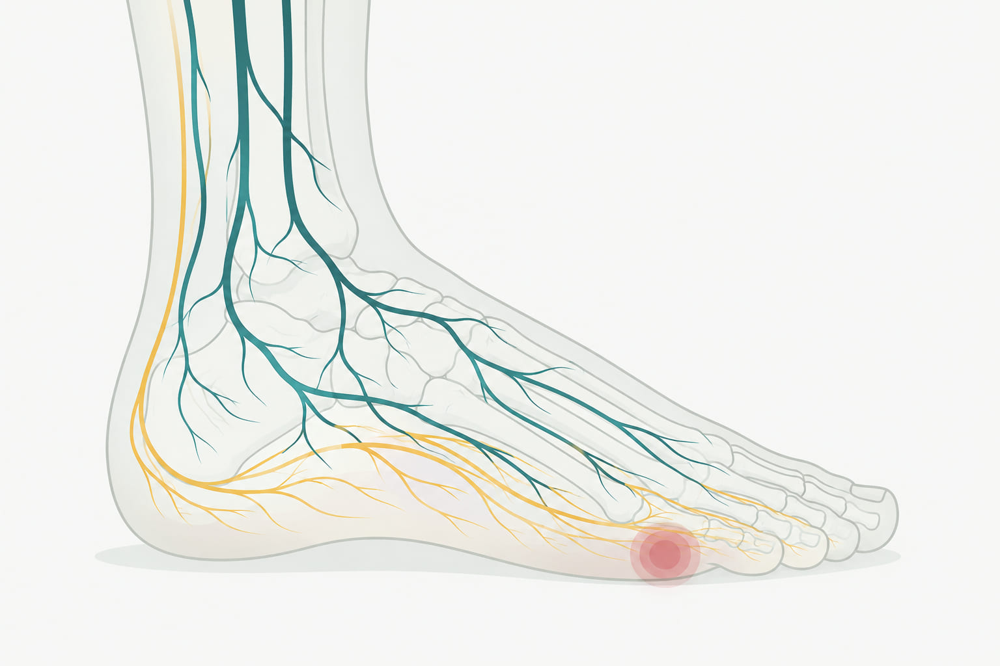

O mundo terá uma cura para a diabetes?
Não é só a China. Equipes na China, nos Estados Unidos, no Brasil e na Suécia perseguem, cada uma à sua maneira, o mesmo objetivo: fazer o corpo voltar a produzir sua própria insulina69. Nenhuma chegou a um tratamento pronto para todo mundo — mas juntas, elas desenham o mapa de um caminho que já é real. Depois, vamos usar o pé diabético como exemplo do que a "terapia celular" já faz hoje, fora do laboratório.
A régua acima compara duas frentes da mesma corrida: a abordagem personalizada e autóloga (como a chinesa) e a abordagem com células de doador padronizadas (como a da Vertex, já em fase 3 desde novembro de 2024)89. Uma régua histórica ajuda a calibrar a expectativa: o primeiro medicamento dessa categoria — feito com ilhotas de doadores falecidos, não com células-tronco — levou décadas de pesquisa até ser aprovado nos EUA10.
Gordura virou célula-tronco. Célula-tronco virou insulina.
Entre os experimentos em andamento pelo mundo, o mais divulgado saiu da China. A equipe do Hospital Tianjin First Central, em parceria com a Universidade de Pequim, pegou células de gordura de uma paciente de 25 anos — que tinha diabetes tipo 1 havia 11 anos — e as reprogramou quimicamente até virarem células-tronco pluripotentes12. A partir delas, cultivaram cerca de 1,5 milhão de ilhotas produtoras de insulina.
Em junho de 2023, essas células foram implantadas sob o músculo abdominal da paciente, numa cirurgia minimamente invasiva de meia hora1.
Setenta e cinco dias depois, ela parou de precisar de insulina externa135. Passou a controlar o próprio açúcar no sangue naturalmente — algo que, para quem convive com diabetes tipo 1, é o resultado que se busca a vida inteira. Resultados semelhantes, com abordagens diferentes, também foram relatados nos Estados Unidos, no Brasil e na Suécia69 — veja o panorama mais adiante.

O mecanismo, passo a passo

Coleta
Células de gordura são retiradas da própria paciente — o material de partida é dela mesma.
Reprogramação química
Pequenas moléculas (não vírus, não genes externos) revertem essas células a um estado pluripotente — a técnica chamada CiPSC.
Diferenciação
Em laboratório, as células-tronco são induzidas a formar aglomerados de ilhotas produtoras de insulina, imitando as ilhotas pancreáticas.
Transplante
As ilhotas são injetadas sob o músculo abdominal, guiadas por ultrassom — um procedimento de cerca de 30 minutos.
Enxerto e produção
As células criam sua própria vascularização e passam a responder à glicose, secretando insulina de forma natural.
Por que ainda não é uma cura, no sentido pleno
É um estudo de caso, não um tratamento. Só 1 a 3 pacientes participam do ensaio chinês (ChiCTR2300072200), ainda em fase 1 — a fase mais inicial e mais cautelosa de testes em humanos14.
A paciente já tomava imunossupressores por causa de um transplante de fígado anterior. Isso ajudou a evitar rejeição das novas células — mas também significa que ainda não se sabe se o método funciona sem essa proteção extra, já que o diabetes tipo 1 é uma doença autoimune que pode atacar as novas ilhotas também14.
Falta tempo de acompanhamento. Um ano de resultados é animador, mas é preciso observar vários anos para confirmar que o efeito realmente dura4.
Escala e custo são o próximo obstáculo, em qualquer país. Produzir células personalizadas para cada paciente, uma a uma, é caro e demorado — muito diferente de fabricar um medicamento em massa7810.
Uma corrida científica global
A equipe chinesa não trabalha sozinha. Vários grupos ao redor do mundo perseguem versões diferentes da mesma ideia: substituir as células que o diabetes destrói67.

| Onde | Abordagem | Estágio (2026) |
|---|---|---|
| China | Células da própria pessoa (CiPSC), sem doador, injetadas no abdômen | Fase 1 — 1 a 3 pacientes, resultados de 1 ano publicados1 |
| EUA — Vertex | Ilhotas de células-tronco de doador (VX-880), com imunossupressão | Avançou para fase 3 em novembro de 2024 — a mais próxima de um tratamento aprovado89 |
| Brasil | Infusão de células-tronco em 21 adultos com diabetes tipo 1 | Concluído — maioria ficou sem insulina por cerca de 3,5 anos, um paciente por 8 anos6 |
| Suécia — Uppsala | Ilhotas de doador geneticamente modificadas para escapar do sistema imune, sem imunossupressores | Um único paciente, 14 meses de acompanhamento — prova de conceito inicial9 |
| EUA — Universidade de Chicago | Ilhotas de doador com imunossupressor experimental menos tóxico (tegoprubart) | 12 pacientes; até 2026, todos estavam livres de insulina, embora 5 tenham precisado de um segundo transplante para chegar lá9 |
Três trajetórias, um mesmo objetivo
Por trás de cada linha da tabela acima existe gente com uma história. Três exemplos ajudam a entender de onde vem essa corrida.
- PhD pela UCLA (1995); trabalhou de 1998 a 2001 como diretor de pesquisa da ViaCell, empresa de células-tronco em Boston, antes de voltar à China.
- Em 2017, ele e um colaborador usaram CRISPR pela primeira vez do mundo num paciente humano — um caso de HIV e leucemia, publicado no New England Journal of Medicine.
- Criou a técnica de reprogramação química (CiPSC) usada no caso de diabetes, o mesmo trabalho que lhe rendeu o Future Science Prize de 2024, considerado o "Nobel chinês".
- Doutorado em 2006 com foco em xenotransplante e transplante de ilhotas; fez pós-doutorado nos EUA (University of Illinois em Chicago e Northwestern) especificamente em transplante de ilhotas.
- Em 2015, liderou a equipe que realizou o primeiro transplante de ilhotas do mundo em uma criança após transplante de fígado.
- Já realizou mais de 80 transplantes clínicos de ilhotas e lidera o primeiro "Centro de Compartilhamento de Ilhotas Humanas" da China, que já forneceu ilhotas para mais de 30 instituições no país.
- Era biólogo do desenvolvimento, estudando rãs e sapos em Harvard, até 1991 — quando seu filho de 6 meses foi diagnosticado com diabetes tipo 1. Mudou de área de pesquisa por causa disso.
- Anos depois, sua filha também desenvolveu diabetes tipo 1, tornando a missão ainda mais pessoal.
- Fundou a empresa Semma Therapeutics — nome que combina os nomes dos dois filhos, Sam e Emma — comprada pela Vertex em 2019 e que deu origem à terapia VX-880, hoje em fase 3.
- Em 2022, deixou Harvard para trabalhar diretamente na Vertex, dizendo querer estar "onde a pesquisa realmente vira tratamento".
Do laboratório até o consultório
Prova de conceito
Casos isolados na China, no Brasil e na Suécia mostram que o princípio funciona biologicamente: é possível reverter o diabetes tipo 1 com células cultivadas em laboratório16.
Ensaios maiores, público restrito
Terapias com células de doador — como a da Vertex, já em fase 3 — podem chegar a uma aprovação regulatória para um grupo específico: pessoas com hipoglicemias graves e risco de vida, que hoje já recebem transplantes de ilhotas de doadores falecidos8910.
Escala e produção em massa
Para que a versão "personalizada", como a chinesa, chegue a mais pessoas, será preciso resolver fabricação em larga escala, redução de custo e tempo de produção — ou migrar para células de doador padronizadas, mais fáceis de produzir em série710.
Fim da imunossupressão
O objetivo final — células que se escondem do sistema imune sem remédios — ainda está em estágio de paciente único, na Suécia. É a etapa mais distante e mais decisiva para tornar o tratamento seguro em massa9.
Enquanto isso, no pé diabético: a terapia celular já está em uso
Se a cura sistêmica da diabetes ainda é uma promessa de anos, vale olhar para uma complicação da própria doença em que abordagens celulares e biológicas já fazem parte do cuidado clínico hoje: o pé diabético.
O pé diabético é uma ferida crônica que surge da combinação entre neuropatia (perda de sensibilidade), má circulação e infecção — e é a principal causa de amputação não traumática no mundo. O cuidado padrão isolado (debridamento, controle de infecção e da glicemia) cura apenas 24% dos casos em 12 semanas e 31% em 20 semanas12. É exatamente essa lacuna que fatores de crescimento, plasma rico em plaquetas e células-tronco vêm tentando fechar — com resultados que já aparecem em dezenas de ensaios clínicos randomizados.

O que a evidência diz que funciona melhor
Meta-análises em rede — que comparam várias terapias ao mesmo tempo, mesmo sem estudos que as comparem diretamente — permitem ranquear o que realmente ajuda a cicatrizar, reduzir amputações e encurtar o tempo de tratamento111213.
Base: debridamento + infecção + glicemia — a referência de comparação12
A intervenção isolada mais recomendada — bota de gesso não removível como 1ª escolha16
Acelera o fechamento e reduz a área da ferida, com boa relação custo-benefício18
Camadas construídas a partir de rankings SUCRA de meta-análises em rede recentes111213 — a barra mais longa indica maior probabilidade de ser a melhor opção entre as comparadas, não uma escala numérica única.
Células-tronco (MSC): entre as intervenções mais eficazes para cicatrização completa e redução do risco de amputação em várias meta-análises em rede1112.
Plasma rico em plaquetas (PRP): reduz amputação e efeitos adversos, com custo mais baixo e maior acesso que terapias com células-tronco1117.
Fator de crescimento epidérmico (EGF): o fator de crescimento isolado mais bem ranqueado para taxa e tempo de cicatrização17.
Membrana amniótica: supera o cuidado padrão de forma significativa, com efeito anti-inflamatório e pró-regenerativo12.
Oxigenoterapia hiperbárica (HBOT) e ondas de choque (ESWT): mais úteis em feridas isquêmicas e em tratamentos que passam de 12 semanas111415.
O achado mais consistente: combinações superam terapias isoladas. NPWT associado a PRP ou a debridamento por ultrassom supera cada técnica sozinha em cicatrização, redução de área, tempo de tratamento e efeitos adversos1214. Na prática clínica, a melhor resposta não vem de uma "bala de prata", mas de somar abordagens de acordo com o tipo de ferida.
O que fica, no fim das contas
A cura sistêmica da diabetes ainda não chegou — mas o pé diabético mostra que a terapia celular, na prática, já ajuda gente a não perder um pé, hoje.
O caminho até uma cura universal para o diabetes tipo 1 é longo — envolve anos de testes, milhares de pacientes, aprovação regulatória e, principalmente, uma forma de produzir células em escala e sem imunossupressão910. Mas o pé diabético prova que essa mesma família de ideias — células-tronco, fatores de crescimento, plasma rico em plaquetas — já deixou o laboratório e está, agora, mudando desfechos clínicos concretos1112. É esse o motivo de tanto entusiasmo com a China, os EUA, o Brasil e a Suécia — e também o motivo de tanta cautela com o prazo.
Perguntas de fixação
Clique em cada pergunta para ver a resposta.
Por que a paciente chinesa não pode ser chamada de "curada", no sentido pleno, mesmo já sem usar insulina há mais de um ano?
Porque é o resultado de apenas 1 paciente dentro de um ensaio clínico de fase 1 (com 3 no total); ela já tomava imunossupressores por outro motivo (um transplante de fígado anterior), o que ajuda a explicar por que o corpo não rejeitou as novas células; e ainda falta tempo de acompanhamento para confirmar que o efeito é duradouro.
Qual a diferença essencial entre a abordagem chinesa e a da Vertex (EUA)?
A chinesa usa células da própria pessoa (autóloga, via reprogramação química — CiPSC), sem depender de doador. A da Vertex usa células de doador padronizadas, com imunossupressão, e já avançou para a fase 3 dos ensaios clínicos — um estágio mais adiantado, mas menos personalizado.
Por que o cuidado padrão, sozinho, não é suficiente para tratar o pé diabético?
Porque cura completamente só 24% dos casos em 12 semanas e 31% em 20 semanas. É essa lacuna que abre espaço para terapias adjuvantes como descarga de peso, NPWT, PRP, células-tronco e fatores de crescimento.
Qual é considerada a intervenção isolada mais importante no tratamento do pé diabético, segundo as diretrizes internacionais (IWGDF)?
A descarga de peso (offloading) — em especial o uso de uma bota de gesso de contato total não removível, indicada como primeira escolha para úlceras plantares neuropáticas.
O que a pesquisa mostra sobre combinar terapias no pé diabético, em vez de usar apenas uma?
Combinações — como pressão negativa (NPWT) associada a plasma rico em plaquetas ou a debridamento por ultrassom — tendem a superar cada técnica isolada em cicatrização, redução de área da ferida, tempo de tratamento e efeitos adversos.
Perguntas socráticas
Sem resposta certa única — são para provocar reflexão, não para decorar.
Se uma terapia funciona perfeitamente em 1 paciente, mas ainda não sabemos se funciona em 1.000, o que realmente significa dizer que ela "funciona"?
A paciente chinesa só não rejeitou as novas células porque já tomava imunossupressores por um motivo completamente diferente (um transplante de fígado). Isso muda o valor científico do resultado? Por quê?
Por que uma complicação "menos badalada" como o pé diabético já incorpora terapias celulares na prática clínica, enquanto a cura sistêmica do diabetes tipo 1 ainda está em fase 1? O que isso revela sobre como a ciência chega ao paciente?
Se uma terapia com células de doador (mais fácil de escalar) chegar ao mercado antes de uma terapia personalizada com as próprias células (potencialmente mais segura, mas mais cara), o que se ganha e o que se perde nessa escolha — em termos de acesso, custo e equidade?
O que a distância entre "resultado clínico real, publicado" e "tratamento disponível para qualquer pessoa" revela sobre a diferença entre ciência e política de saúde pública?